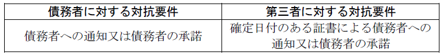
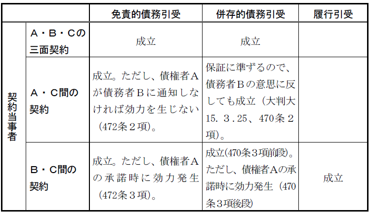

第４編 債権総論
第４章 債権譲渡及び債務引受け
第１節 債権譲渡
Ⅰ 総説
：債権をその同一性を維持しつつ移転させることを目的とする法律行為
①債権はその同一性を維持しつつ移転し、同時履行の抗弁権・担保権なども原則として移転する。
②契約上の地位は移転しないので、契約の解除権などは移転しない。
Ⅱ 債権の譲渡
※ 466条２項以下は、債権譲渡を制限する意思表示の効力を定めるものであり、同条２項は、譲渡制限特約があっても、債権譲渡は有効であることを定めている。
1. 債権の譲渡性
債権は原則として譲渡することができる（466条１項本文）。
将来発生する債権も譲渡できる（466条の６）。
2. 譲渡制限
(1) 原則
原則として債権は譲渡できるが、譲渡性が制限される場合もある。
(a) 債権の性質がこれを許さないとき（466条１項ただし書）
①債権者の変更によって、当然にその給付内容がまったく変わる債権
ex．特定の人の肖像を描かせる債権、特定の人を扶養させる債権
②特定の債権者に給付することに重要な意義を有する債権
このような債権は、債務者が承諾すれば譲渡することができる。
ex．使用者の権利（625条１項）、賃借権（612条１項）、委任者の事務処理請求権
(b) 法律による譲渡禁止
ex．民法上の扶養請求権（881条）、恩給請求権、年金受給権
(2) 譲渡制限特約
(a) 趣旨
債権者の交代による苛酷な取立てから債務者を保護すること、債務者の支払事務の煩雑化、過誤払を回避することなどにある。
(b) 特約の効力
債権的効力説（466条２項）
特約により債権の譲渡性が失われず、特約違反の債権譲渡であっても有効になるのが原則である。
（理由）
中小企業が債権者となっている場合に、譲渡制限特約が中小企業の資金調達の障害となっている等の弊害を防ぐ。
(c) 譲受人が特約について悪意または重過失の場合（466条３項）
債務者は、その債務の履行を拒むことができ、かつ、譲渡人に対する弁済その他の債務を消滅させる事由をもってその譲受人その他の第三者に対抗することができる。
※ 債務者が履行しない場合
債務者が債務を履行せず、譲受人が相当の期間を定めて譲渡人への履行の催促をし、その期間内に履行がない場合、債務者は、債務の履行の拒絶および弁済等による対抗ができなくなる。
(d) 債務者の承諾
譲渡制限の特約のある債権を譲受人が悪意で譲り受けた場合でも、債務者の承諾があるときは、特約を譲受人に対して対抗できない。なぜなら、譲渡制限特約は債務者の利益を保護するものだからである。
(e) 譲渡制限特約付債権に対する強制執行
譲渡制限が付された債権に強制執行されたときは、債務者は、差押債権者に対して譲渡制限特約をもって対抗できない（466条の４第１項）。
※ 466条の４第１項は、私人間の合意で差押禁止財産を作り出すことはできないという判例法理を明文化した。
(f) 債務者の供託権（466条の２）
譲渡制限特約が付いた金銭債権が譲渡された場合、譲受人が特約を知っていたかどうかによって、債務者が弁済する相手は異なることになる。
譲受人が善意無過失：債務者は譲受人に弁済しなければならない。
譲受人が悪意又は重過失：債務者は履行拒絶および譲渡人への弁済等を譲受人に対抗できるため、譲渡人に弁済すればよい。
しかし、譲受人が特約を知っていたかどうかは債務者にはわからないため、譲渡制限特約付の金銭債権が譲渡された場合、債務者は供託をすることができる。
(g) 譲受人の供託請求権（466条の３）
譲渡制限特約付の金銭債権が譲渡され、譲受人が特約について悪意または重過失であった場合、債務者は譲渡人に弁済し、譲受人は譲渡人から金銭を受領することで債権を回収することになる。
しかし、譲渡人に破産手続が開始した場合、譲受人は金銭を回収できなくなるリスクがある。このようなリスク回避のため、譲受人の供託請求権が認められた。
ⅰ 供託請求できる譲受人
債権の全額を譲り受け、第三者対抗要件を具備した譲受人
ⅱ 要件
譲渡人が破産手続開始の決定を受けたこと
ⅲ 効果
譲受人から供託を請求された債務者は供託しなければならず、請求後の譲渡人に対する弁済は譲受人に対抗できない。
1. 総説
民法は、「債務者」及びそれ以外の「第三者」に対する対抗要件として、債務者への「通知」・債務者の「承諾」を要求している（467条１項）。
(1) 趣旨
債権譲渡は、譲渡人・譲受人間の合意のみで行われ、債務者はこれに関与しない。そのため、債務者にとっては債権者が特定できず二重払等の危険があり、何らかの方法で債務者に債権譲渡の事実を知らせる必要がある。また、債務者以外の第三者が譲渡を知らずに二重譲渡を受けたり、譲渡債権を差し押さえることもある。

2. 債務者に対する対抗要件
(1) 通知
(a) 法的性質
観念の通知であるが、意思表示に関する規定が類推適用される。
(b) 通知をする者
通知をする者は、譲渡人又はその包括承継人である。
譲受人が譲渡人に代位して通知することは許されない（大判昭５.10.10）。
なお、譲受人が譲渡人の代理人として債務者に通知をすることはできる。
（理由）
① 権利を失う譲渡人からの通知だから信憑性があるのであって、譲受人が通知しても信用できない。
② 通知は譲渡人の権利でなく義務である。
③ 譲渡人が債務者に譲渡の通知をしないときは、譲受人は譲渡人に対して譲渡の通知をするように請求することができる。
※ 債権がＡからＢ、ＢからＣと順次に譲渡された場合には、ＣはＢのＡに対する、債務者に通知すべき旨の請求権を代位行使することができる。
(c) 通知の相手方
債務者である。
多数の債務者のある債権で１人に対する通知が他の債務者に対しても効力を生ずるかどうかは、それらの債務関係の性質による。
連帯債務では、債務者全員に対する債権を譲渡した場合は全員に対して通知が必要である（441条）。一部の者に対する債権だけを譲渡した場合はその者に対する通知があれば足りる。
保証債務では、主たる債務者に通知すれば足りる（大判明39.３.３）。保証人に対してだけ通知をしても主たる債務者のみならず、保証人に対しても対抗できない。
(d) 通知の時期
通知は、譲渡後でもよい。譲渡後に通知がされた場合、そのときから対抗力を生じる（大判大３.５.21）。
事前の通知は対抗要件とならない。
（理由）
譲渡されるかどうか、またいつ譲渡されるかが不明であり、債務者に不利益を与えるから。
(e) 通知の効果
①対抗力の発生
通知により譲受人は債務者に対し権利を行使できる。
②抗弁の対抗
債務者は「対抗要件具備時までに譲渡人に対して生じた事由」をもって譲受人に対抗できる（468条１項）。なぜなら、債権は、債権譲渡によってその同一性を失わずに移転するものであり、また、債務者と無関係になされる債権譲渡契約によって、債務者が不利にならないようにするためだからである。
ex．譲渡債権の不成立、消滅、同時履行の抗弁権
(2) 承諾
(a) 法的性質
通知と同様、観念の通知である。意思表示に関する規定の類推適用がある。
(b) 承諾の相手方
譲渡人・譲受人のどちらでもよい（大判大６.10.２）。
(c) 承諾の時期
承諾の時期は譲渡後でもよい。譲渡後に承諾がされた場合、そのときから対抗力を生ずる。
事前の承諾も譲渡債権と譲受人とが特定している限り有効である（最判昭28.５.29）。
（理由）
債権者の一方的な通知と違い、承諾は債務者がするものだから。
(d) 承諾の効果
通知の効果と同じである。
3. 第三者に対する対抗要件
第三者に対する対抗要件として、確定日付のある証書による通知・承諾が必要である（467条２項）。
「確定日付のある証書」を要件とすることで、関係当事者の通謀により譲渡日付をさかのぼらせる不正を防止することができる。
(1) 確定日付のある証書
Ｑ 確定日付は何について必要か。
→ 通知・承諾について確定日付があること（大連判大３.12.22）
※ 確定日付のある証書には、公正証書・内容証明郵便などが利用されている。
(2) 第三者の範囲
「第三者」とは譲渡当事者以外の者で、債権そのものに対し法律上の利益を有する者をいう（大判大４.３.27）。
①「第三者」に当たる者－債権が二重に譲渡されたときの第二譲受人（大判昭７.６.28）、譲渡された債権の質権者（大判大８.８.25）、譲渡人の債権者で譲渡された債権について転付命令を得た者（大判昭７.５.24）など
②「第三者」に当たらない者－譲渡された債権について間接的な利益を有するにすぎない一般債権者（大判大８.６.30）、保証人（大判大元.12.27）など
(3) 二重譲渡がなされた場合
(a) 一方が確定日付のある証書による通知で、他方が確定日付のある証書によらない通知であれば、前者が優先する。
(b) 共に確定日付のある通知がある場合の優劣の判断
→ 到達時説（最判昭49.３.７・通説）
通知の到達の先後によって決する。
（理由）
467条２項が確定日付のある債務者への通知を第三者に対する対抗要件としたのは、債権を譲り受けようとする者は債権の存否について債務者に確認するのが通常であり、債務者の認識を通じて債権譲渡が公示されるからである。そして、債務者の認識は、通知の到達により生じるから、公示方法としての債務者の認識を先に得た者が優先する。
（批判）
債務者と譲受人の通謀により到達の日付が偽装される危険を避けられない。
(4) 確定日付のある通知の同時到達の場合の優劣の判断
(a) 優劣の判断
譲受人は互いに自己が優先することを主張することができない（最判昭55.１.11・多数説）。
(b) 優劣がない場合の各譲受人と債務者の関係
各譲受人は債務者に対し、各々の譲り受けた債権の全額の弁済を請求することができ、譲受人の１人から請求を受けた債務者は、他の譲受人に対する弁済その他の債務消滅事由がない限り、弁済を免れない（最判昭55.１.11）。
4. 債権の二重譲渡にかかるその他の問題
(1) 第１譲渡については、確定日付のある証書によらないで通知がなされ、第１譲受人に弁済した後、第２譲渡が行われ、それについては、確定日付のある通知がなされた場合
→ この場合、弁済により債権は既に消滅しているから、第２譲渡は無効となる。なぜなら、「対抗」とは同一債権の帰属について両立しない地位が対立する場合にのみ生ずる問題だからである。
(2) 劣後譲受人に対する弁済
→ 劣後譲受人に対する弁済にも478条（受領権者としての外観を有する者に対する弁済）の適用があり、弁済が有効になる場合がある。
Ⅲ 動産債権譲渡対抗要件特例法による債権譲渡の対抗要件
民法上の債権譲渡の対抗要件は、債務者への通知・承諾である（467条）。しかし、債務者及び債務者以外の第三者に対する対抗要件が、債務者への通知・承諾であることは、物権変動における対抗要件である「登記」（177）に比べると、取引の安全の面で問題があるといわざるを得ない。そこで、現在では、動産及び債権の譲渡の対抗要件に関する民法の特例等に関する法律（以下「動産債権譲渡対抗要件特例法」という。）が制定され、債権の譲渡においても「登記」を対抗要件とする制度が整備されている。
1. 債権譲渡登記の対象
法人が金銭債権を譲渡する場合に限定している（特例法4条1項）。
2. 債権譲渡登記の効果
(1) 登記の効果
債務者以外の第三者に対しては、当該登記がされた場合、確定日付のある通知があったものとみなされ、当該登記の日付を確定日付とする（特例法4条1項）。
(2) 債務者に対する通知
債務者に対しては、債権譲渡及び債権譲渡登記がされたことについて、登記事項証明書を交付して通知をし、又は債務者が承諾をしたときは、確定日付のある通知があったものとみなされる（特例法4条2項）。
当該通知は、債権の譲渡人・譲受人のどちらからでもできる。登記事項証明書を交付して通知するため、虚偽の通知はできないからである。
第２節 債務引受け・契約上の地位の移転
Ⅰ 債務引受け
：債務をその同一性を失わせずに移転させることを目的とする契約
1. 意義
：債務引受のうち、旧債務者が債務を免れるもの
2. 概要
472条において免責的債務引受の基本的な要件・効果につき明文化している。同条２項は、債権者と引受人となる者の契約により免責的債務引受をすることができるとしている。472条の２以下は、免責的債務引受における引受人の抗弁、引受人の求償権、担保の移転について類型化し明文化している。
3. 免責的債務引受の要件
(1) 債務の性質上、第三者による履行が可能なこと
(2) 以下のいずれかの契約があること
(a) 債権者・債務者・引受人の三面契約
(b) 債権者・引受人の契約
債務者の意思に反しても契約できる。
債権者から債務者に契約した者の通知をした時に効力が発生する。
(c) 債務者・引受人の契約
債権者が引受人に承諾することによって効力が発生する。
4. 効果
引受人が債務を負担し、旧債務者は自己の債務を免れる。
(1) 免責的債務引受における引受人の抗弁権
引受人は、債務者の負担している債務と同一内容の債務を負担することから、免責的債務引受の効力が生じた時に債務者が主張することができた抗弁をもって債権者に対抗できる（472条の２第１項）。
債務者が債権者に対して取消権又は解除権を有するときは、引受人は、債務者がその債務を免れる限度で、債務の履行拒絶ができる（472条の２第２項）。引受人は、債務者の債務を引き受けただけであるから、債務者が有する解除権又は取消権を行使できないが、債務者がこれらの権利を行使すれば、引受人の債務も消滅するため、債務者が権利行使するまで引受人が履行を拒絶できないとすることが不当なためである。
(2) 免責的債務引受における引受人の求償権
472条の３は、免責的債務引受の引受人が債務者に対して求償権を取得しないことを定める。免責的債務引受の性質上、引受人と債務者の間に求償権を発生させる基礎を欠くことや、債務者の期待保護の観点から定められている。なお、引受人・債務者間で免責的債務引受に関する対価を支払う合意をすることはできる。
(3) 免責的債務引受における担保の移転
債権者は、あらかじめ又は同時に引受人に意思表示することによって、債務引受により債務者が免れる債務の担保として設定された担保権を、引受人が負担する債務に移すことができる（472条の４第１項、第２項）。「移すことができる」としているのは、518条１項とのバランスから後順位担保権者がいる場合であっても順位を維持したまま引受人の債務に移転させることができることを意味する。
ただし、引受人以外の者が設定した担保権・保証の移転にはその者（物上保証人・保証人）の承諾が必要である。保証人の承諾は書面または電磁的記録でしなければ効力を生じない。
1. 意義
：債務引受のうち、債務者と引受人が連帯して同一内容の債務を負担するもの
2. 併存的債務引受の要件
(1) 債務の性質上、第三者による履行が可能なこと
(2) 以下のいずれかの契約があること
(a) 債権者・債務者・引受人の契約
(b) 債権者・引受人の契約
債務者の意思に反しても契約できる。
(c) 債務者・引受人の契約
債権者が引受人に承諾することによって効力が発生する。
3. 効果
引受人が債務者が債権者に対して負担する債務と同一の債務を負担し、債務者と連帯して責任を負う。つまり、債務者と引受人の債務は連帯債務となる。
4. 併存的債務引受における引受人の抗弁
引受人は、債務者の負担している債務と同一内容の債務を負担することから、併存的債務引受の効力が生じた時に債務者が主張することができた抗弁をもって債権者に対抗できる（471条１項）。
債務者が債権者に対して取消権又は解除権を有するときは、引受人は、債務者がその債務を免れるべき限度で、債務の履行拒絶ができる（471条２項）。引受人は、債務者の債務を引き受けただけであるから、債務者が有する解除権又は取消権を行使できないが、債務者がこれらの権利を行使すれば、引受人の債務も消滅するため、債務者が権利行使するまで引受人が履行を拒絶できないとすることが不当なためである。
1. 意義
：引受人が債務者に対して債務者の債務を履行することを約する契約
引受人は、債権者に第三者として弁済するだけであって、債権者が引受人に対してこれを請求する債権を取得するわけではない。
2. 要件
(1) 債務の性質上、第三者による履行が可能なこと
(2) 契約当事者
債務者と引受人との契約によってすることができる。債権者は関係しない。
3. 効果
引受人は、第三者として弁済すべき義務を、債務者に対して負担する。
債務者は、引受人に対して、債権者に弁済すべきことを請求することができる。引受人は、債権者に弁済しないときは債務不履行責任を負う。
【債務引受けの当事者（Ａ＝債権者、Ｂ＝債務者、Ｃ＝引受人とした場合）】

Ⅱ 契約上の地位の移転
1. 意義
：契約当事者たる地位の移転を目的とする契約
2. 要件
契約上の両当事者と譲受人との三面契約ですれば当然有効である。
Ｑ 原契約の一方の当事者と譲受人との間の契約によってすることができるか。
→ 契約上の地位の移転は、債務の移転の要素が含まれるため、原則として相手方の承認を要する（大判大14.12.15、最判昭30.９.29、539条の２）。
ただし、賃貸借の対抗要件を備えた場合において、その不動産が譲渡されたときは、その不動産の賃貸人たる地位は、その譲受人に移転する(605条の２第１項）。
3. 効果
その契約に基づくすべての権利義務関係が、一体として譲受人に移転する。既に生じた債権･債務だけでなく、その契約上の取消権・解除権も移転する。